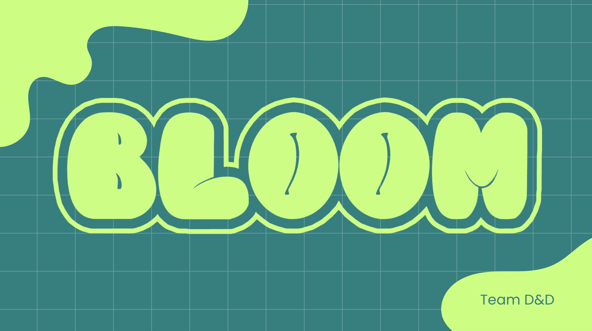

Bloom
2025An AR wellness app that uses facial landmark tracking to detect emotions in real time, pairing mood insights with AI journaling and a gamified digital garden for mental health support.
- Developed an interactive web application that detects real-time user emotions using facial landmark tracking via MediaPipe, enabling dynamic AR visualizations that reflect emotional states.
- Engineered a contextual AI journaling and chatbot system using OpenAI's API, delivering personalized mental health support.
- Integrated a gamified wellness tracker with streak-based digital garden growth to encourage daily emotional check-ins.
